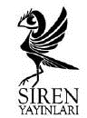

www.sirenyayinlari.com
info@sirenyayinlari.com
sireninsesi.blogspot.com
Girl On the Fridge
© Etgar Keret
Astım Krizi, Maymunluk, Bumerang, Yenidünya, Düşlerin Besin Değeri Üzerine, Doğum Günün Kutlu Olsun, Hiç, Yavşak Şelomo Homo, Terminal, Yolculuk, Tavla Canavarı, Otobüslerin Öldüğü Gece, Bir Şey Ahlâkı, Efsane Süt, Vladimir Hüseyin, Siyaset Yok, Yordan, Kuanta, İnsan Değiller, İzlandaca Gulliver, Neşeli Renkler ve Hediye Torbaları adlı öyküler İbranicede ilk olarak Pipelines adlı kitapta yer almıştır. (Am Oved, 1992)
Kal!, Ön Elemelerin Gerçek Galibi, Onsuz, Sabır, Şapka Numarası, Özel Röportaj, Resim, Buzdolabının Üstündeki Kız, Damlalar, 76 Yazı, Dinozor Yumurtaları, Maymun Amca, Baloncuklar, Kefaret, Dünya Şampiyonu, Sihirbazsız Bir Yaş Günü, Duvarların İçinden, Yüzde Yüz, Alternatif, Kaldırımlar, En İyi Arkadaşım, Her Şey Çok Güzel Olacak, Çıtayı Yükseltmek ve Çakma Venüs adlı öyküler İbranicede ilk olarak Missing Kissinger adlı kitapta yer almıştır. (Zmora Bitan, 1994)
Bu kitabın Türkçe yayın hakları Institute for the Translation of Hebrew Literature ve Kalem Ajans aracılığıyla Siren Yayınları’na aittir. Tanıtım amaçlı kısa alıntılar haricinde, yayıncının özel izni olmaksızın çoğaltılamaz.
Siren Yayınları - Öykü
Birinci Baskı: Ekim 2011
Yayın Yönetmeni: Sanem Sirer
Yayın Danışmanı: Erol Aydın
Çeviren: Avi Pardo
Kapak Tasarım: Nazlım Dumlu
Asmalı Mescit Mah. Ensiz Sokak No. 9/312
Beyoğlu-İSTANBUL
t (212) 243 45 65 f (212) 251 05 32